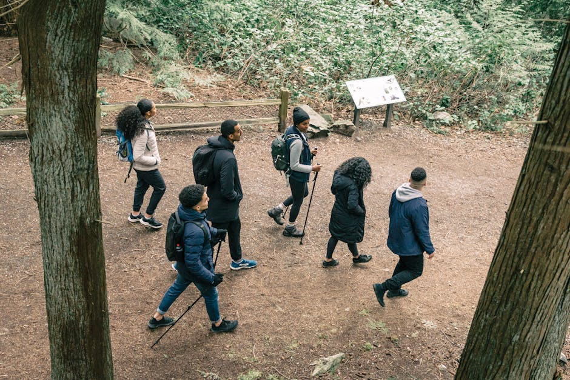
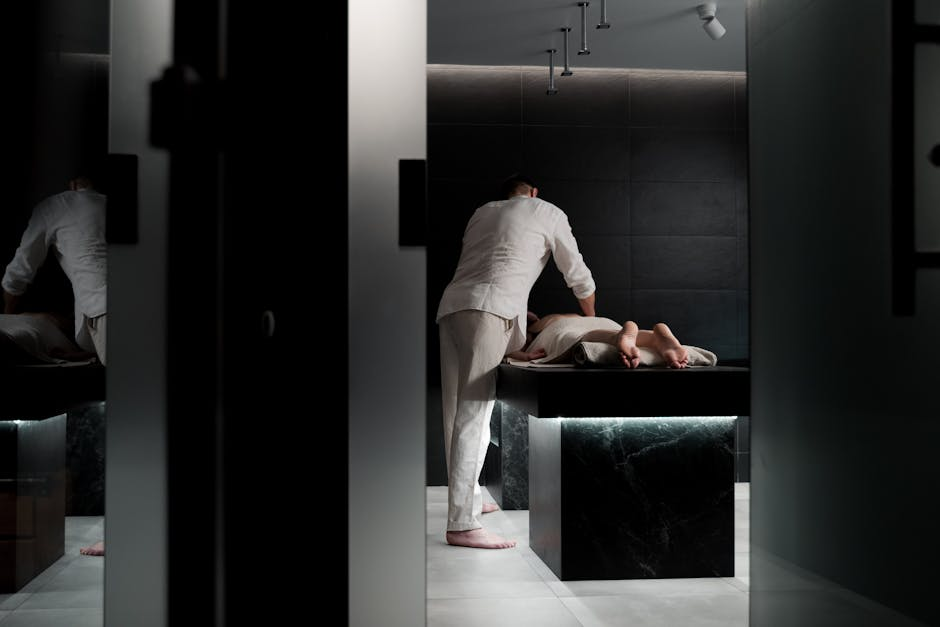
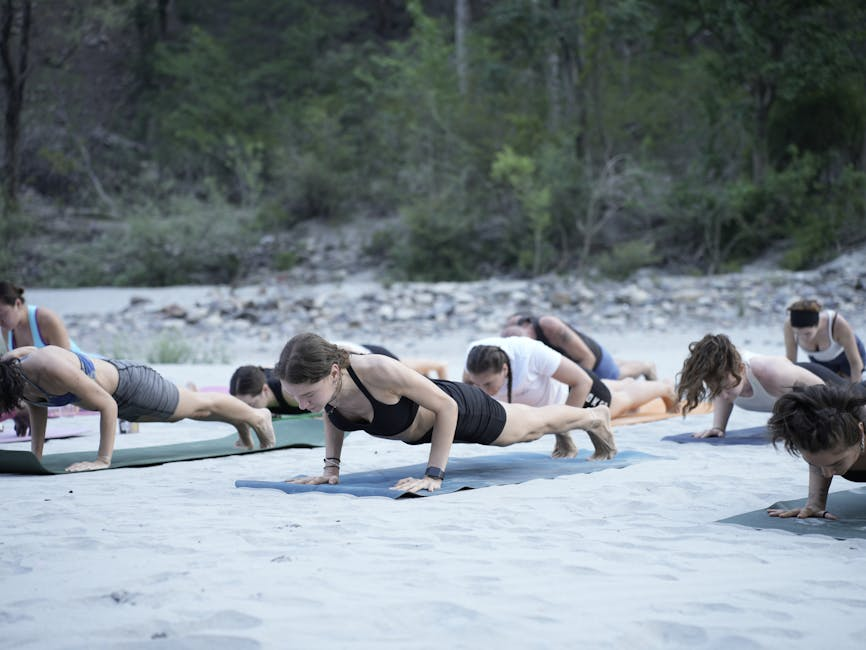
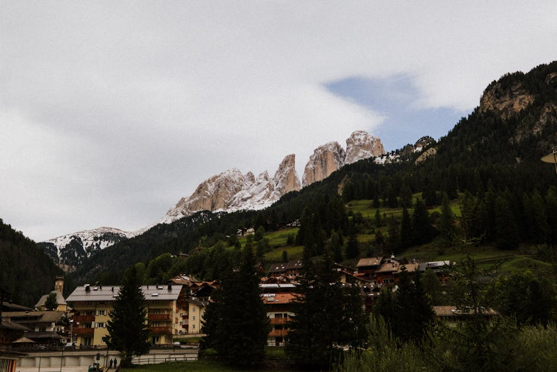

Handlock è la tua bussola editoriale. Scopri guide esclusive, recensioni autentiche e consigli pratici per trasformare ogni fine settimana in un'avventura indimenticabile.
Approfondimenti curati dai nostri esperti per vivere il territorio italiano in modo attivo e consapevole.

Esplora le nostre guide dettagliate sulle migliori escursioni Italia. Dalle vette alpine ai sentieri costieri, recensiamo gli itinerari ideali per gli appassionati di trekking di ogni livello, fornendo mappe, difficoltà e consigli sull'attrezzatura.

Dopo la fatica, il meritato riposo. Visitiamo e valutiamo le eccellenze italiane nel settore terme e spa. Scopri le strutture termali storiche, i centri benessere innovativi e i ritiri olistici perfetti per rigenerare corpo e mente.

Non solo camminate: la nostra rivista copre un ampio spettro di attività all'aperto. Dal cicloturismo al kayak nei laghi alpini, dallo yoga in mezzo ai boschi all'arrampicata, ti diamo l'ispirazione per vivere la natura a 360 gradi.
Ogni mese pubblichiamo articoli speciali, interviste ad esperti del settore outdoor e guide stagionali per prepararti al meglio. La nostra missione è promuovere un turismo lento, rispettoso dell'ambiente e profondamente rigenerante.
"Grazie agli articoli di Handlock ho scoperto dei percorsi natura vicino casa che non conoscevo affatto. Le loro guide sono precise, affidabili e scritte con vera passione per il territorio."
"La sezione dedicata a terme e spa è il mio rifugio virtuale. Le recensioni sono oneste e descrivono l'atmosfera in modo così vivido che sembra di esserci già. Ottima rivista."
"Cercavo idee per attività all'aperto da fare nel weekend e mi sono imbattuto in Handlock. Il livello di dettaglio sugli itinerari di montagna è impressionante. Un punto di riferimento."
Handlock nasce dalla passione per il territorio italiano, unendo l'amore per l'avventura incontaminata al desiderio di cura personale. La nostra rivista si dedica a esplorare, recensire e raccontare le migliori esperienze di benessere e le più affascinanti attività outdoor della penisola.
Il nostro team di redattori viaggia costantemente per mappare percorsi natura inediti e testare personalmente le strutture dedicate al relax. Crediamo che il vero lusso risieda nel tempo speso all'aria aperta, camminando su sentieri silenziosi o rigenerandosi in acque termali curative.
Il nostro obiettivo è fornirti l'ispirazione e le informazioni necessarie per organizzare la tua prossima fuga dalla routine, in totale autonomia.

Tutto ciò che devi sapere sulla nostra rivista online.
Non perderti i nuovi itinerari e le recensioni esclusive. Unisciti alla community di Handlock per ricevere aggiornamenti periodici sulle migliori attività outdoor in Italia.